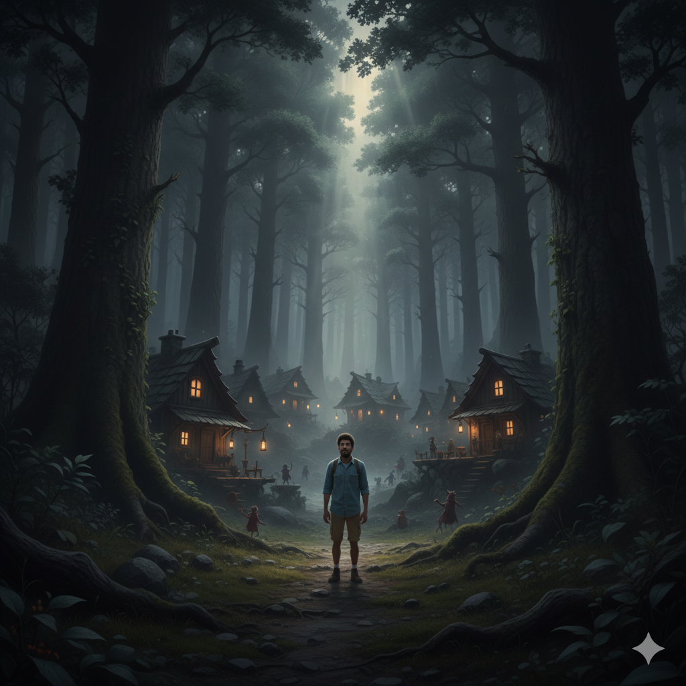

Pipo se metió al bosque para buscar un nuevo camino hacia la frontera evitando la lluvia.
El bosque es oscuro, los árboles son muy altos y el ambiente se siente amenazante.
Después de caminar durante horas en el bosque, Pipo se encuentra una aldea pequeña.
¿Qué debe hacer Pipo?